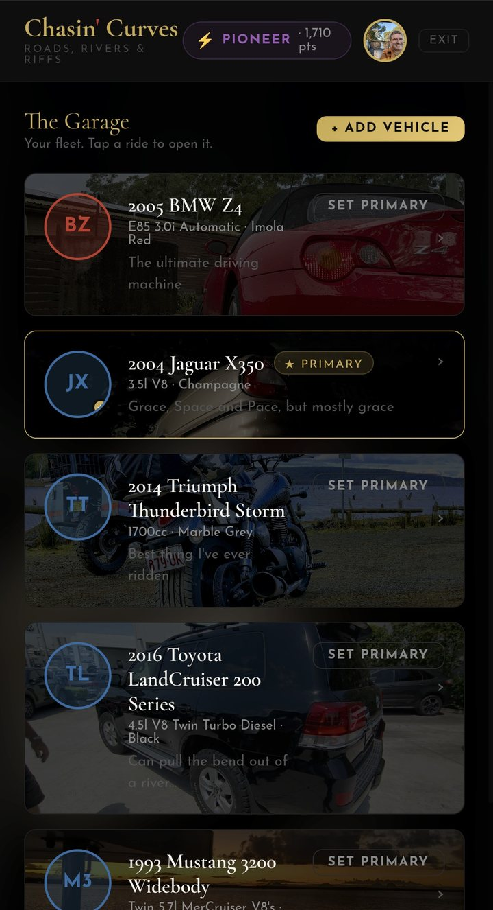

How a drive becomes a postcard
The Logbook is the engine. Log a drive and the postcard builds itself.
-
Log it
Start an entry before you roll. The odometer and time are stamped for you, so the record stays honest.
-
Trail it
Switch on the GPS trail and the app records your route as you go. Keep Chasin' Curves open on screen while you drive. A home-location privacy zone keeps your driveway off the map.
-
Send it
Finish the trip and generate a postcard: your route over a photo of your ride, ready to post or drop in the group chat.
The Garage
Cars, bikes and boats, all in one place. Give each ride a full photo gallery and a set of notes, and pick a primary for the one you drive most.
Free: one vehicle Pro: no cap
Phone screenshot, status bar cropped
Roads worth the drive
Browse roads from the Australian hinterland to the Swiss Alps, filter by state or country and read the tags that matter: twisties, views, mountain passes, long haul. Add a road you love and rate the ones you've driven.
Free for everyone
Map + road list, real reviews only, TGM banner dismissed
Send the road, already drawn
Pick the route and the meeting spot, choose the ride you're bringing, and your mates get an invite with the route drawn over the photo. They see where, when and who's going.
Free for everyone
The 30 December invite, original export
Counting your registration days
Some Australian states cap how many days a year you can drive a vehicle on certain registrations. For Australian members, the Logbook keeps the count for you. It tracks each vehicle over a rolling 365 days against your state's cap, and entries are timestamped by the server, so they can't be back-dated.
ProThe Logbook is a record-keeping tool, not legal advice. Check your state's rules and your club's requirements.

Day-count vs cap, phone screenshot
Free to start, Pro when you're ready
Open the app and you're in. Upgrade inside the app whenever it's worth it to you.
| Free | Pro | |
|---|---|---|
| Vehicles in your Garage | One | Unlimited |
| Browse, add and rate roads | Yes included | Yes included |
| Plan runs and send trip invites | Yes included | Yes included |
| Logbook (with a registration day count for Australian members) | No not included | Yes included |
| Trip postcards | No not included | Yes included |
| Plan | Price (US dollars) | Per month |
|---|---|---|
| 1 month | $2.99 | $2.99 |
| 6 months | $11.99 | about $2.00 |
| 12 months (best value) | $19.99 | about $1.67 |
One-time payments. Nothing auto-renews, so Pro simply ends when your time runs out unless you buy more. Vehicles you've already added stay in your Garage.
Roads, rivers & riffs.
Nothing to download from a store. Open it, sign in with your email and start your Garage.